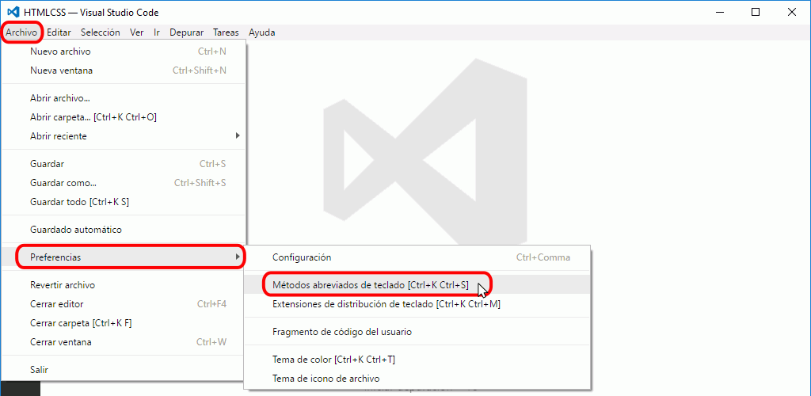
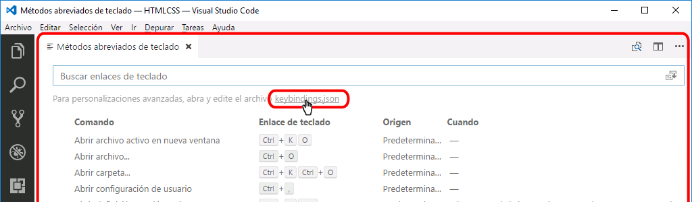
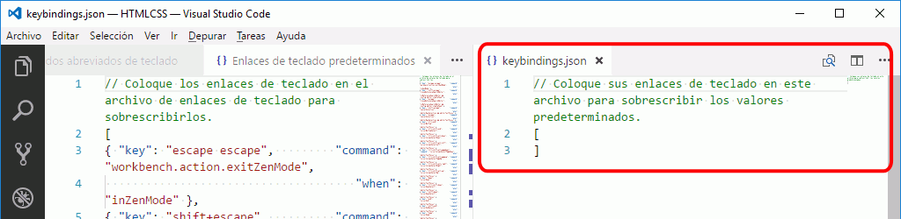
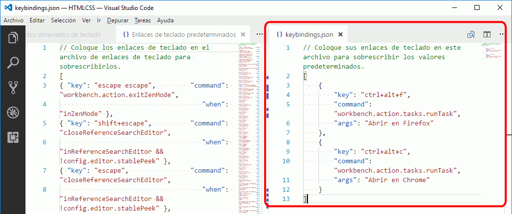
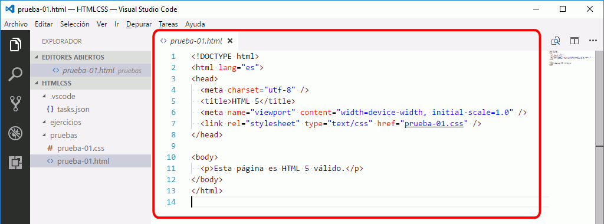
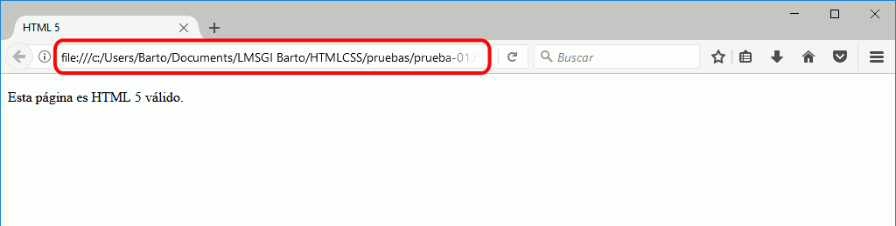

Estos son los pasos a realizar para crear atajos de teclado en Visual Studio Code.



Al crearse, este fichero no contiene ninguna definición:
// Coloque sus enlaces de teclado en este archivo para sobrescribir los valores predeterminados.
[
]

En la captura anterior se muestran los atajos de teclado que permiten ejecutar las tareas aconsejadas en la lección Tareas de Visual Studio Code que abren ficheros en Firefox y Chrome. Los atajos asociados serían:
Estos son los pasos a realizar para utilizar alguno de los atajos de teclado personalizados:


Estos son los atajos que se aconseja definir para seguir el curso de Páginas web HTML y hojas de estilo CSS de mclibre.org.
Estos dos atajos permiten abrir en los navegadores Firefox o Google Chrome las páginas web que se están editando en Visual Studio Code.
Antes de definir estos atajos de teclado es necesario crear las tareas correspondientes. Las tareas son las tareas recomendadas para seguir el curso de Páginas web HTML y hojas de estilo CSS de mclibre.org que se comentan en la lección tareas en Visual Studio Code.
Este es el contenido del archivo keybindings.json:
// Atajos de teclado recomendados para el curso Páginas web HTML y hojas de estilo CSS de www.mclibre.org
[
{
"key": "ctrl+alt+f",
"command": "workbench.action.tasks.runTask",
"args": "Abrir en Firefox"
},
{
"key": "ctrl+alt+c",
"command": "workbench.action.tasks.runTask",
"args": "Abrir en Chrome"
}
]